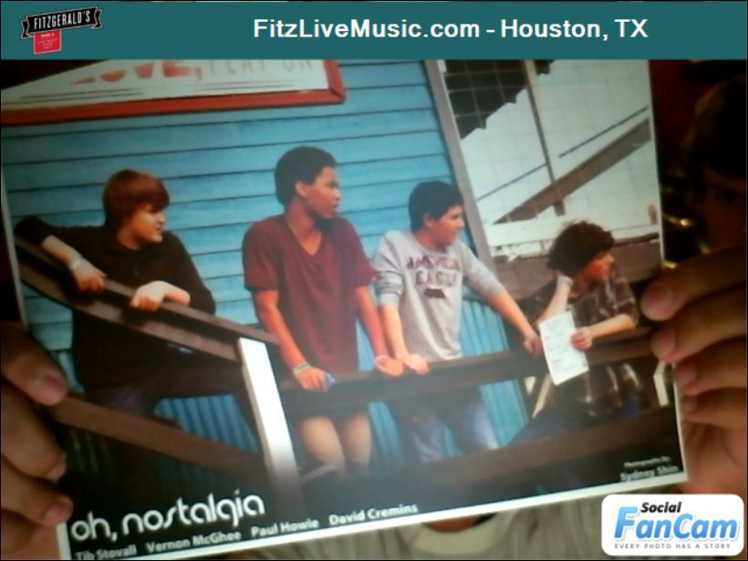

Rock ‘n Roll
Little Birdie (2011) Bright Spots (2013) It Goes On (2014) Learning the guitar (thanks, Dad) led to writing songs, picking up the bass, and joining a band my freshman year of high school. I have been in a band (or two) practically ever since and by a rough estimate have recorded in some form well over one hundred original songs, mainly just to my computer in my room or to a small, crowded room, but occasionally in an actual recording studio. Here’s a few selections from my high school group Oh, Nostalgia (with Vernon McGhee (link), Paul Howie, and Tib Stovall) …